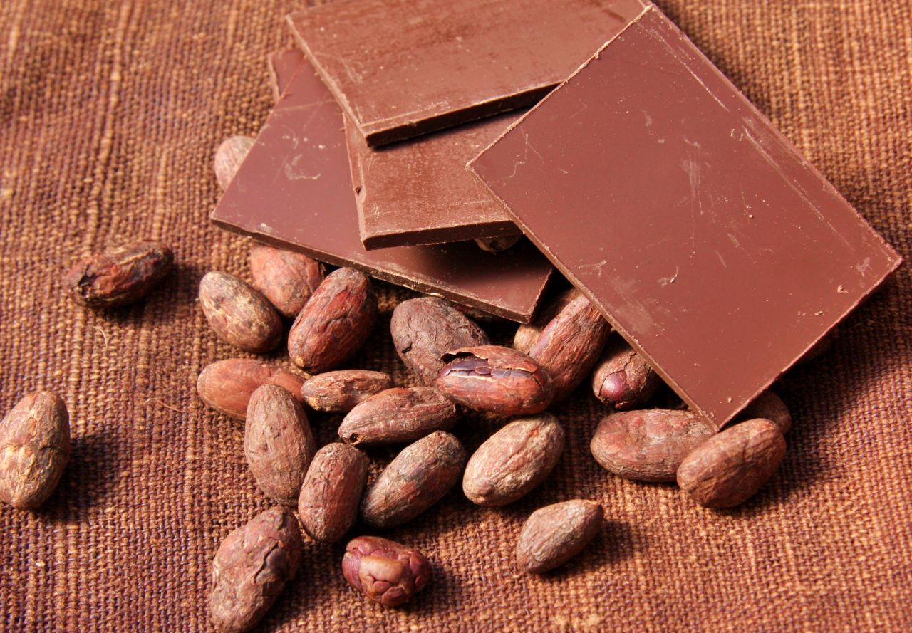
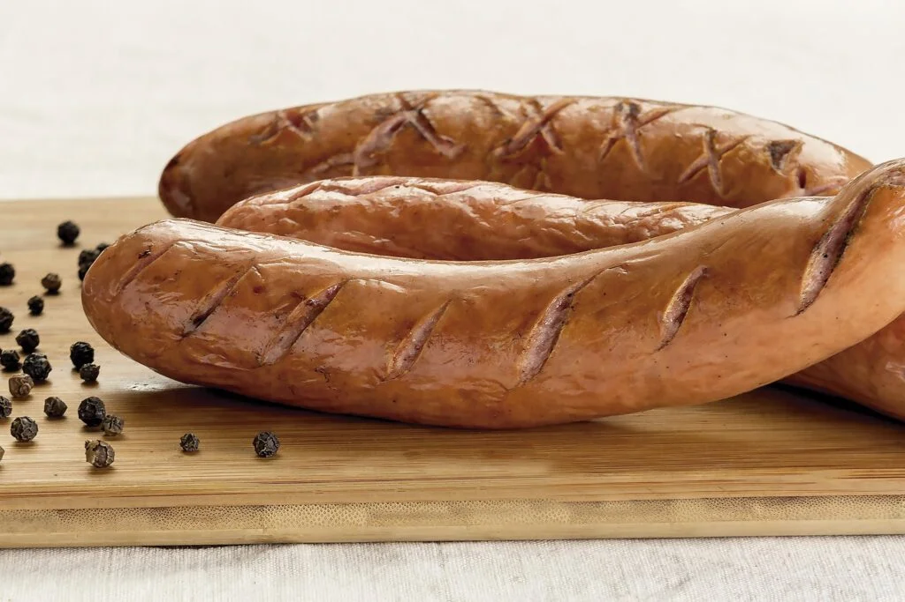
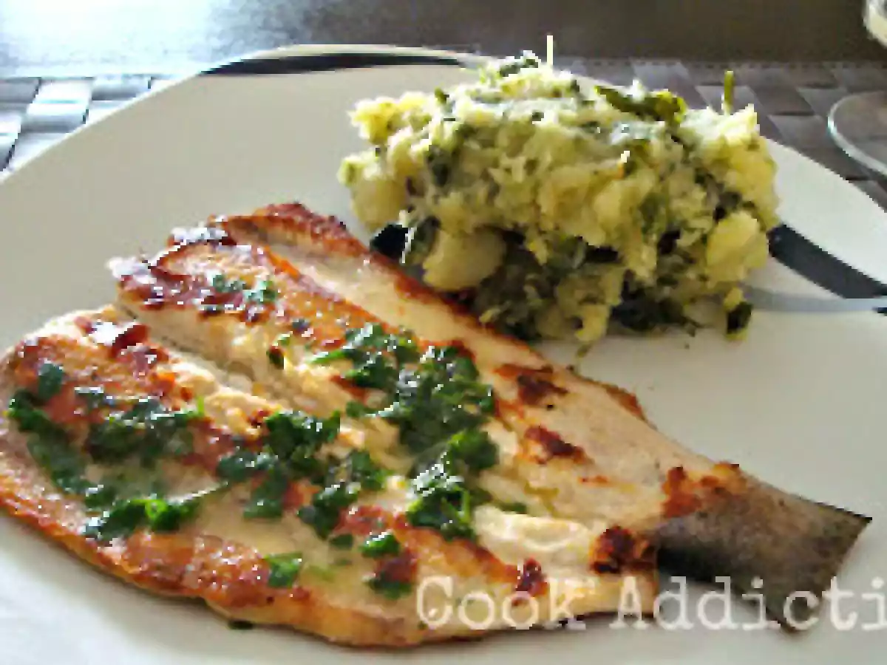
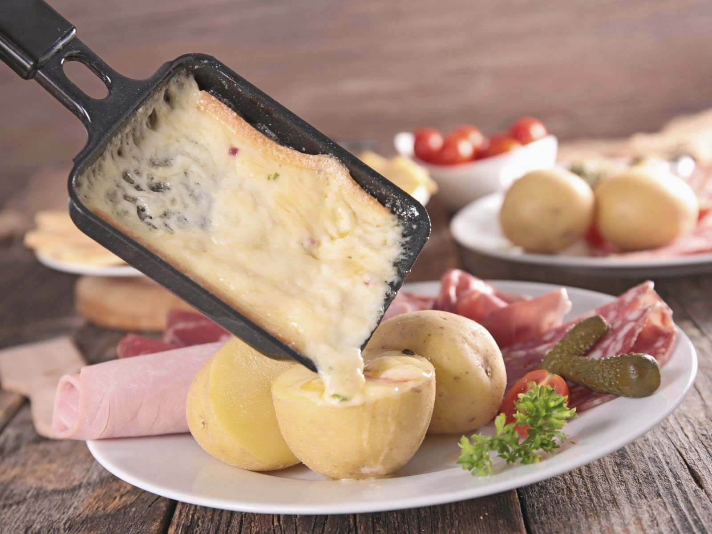

Muito vendido em lojas e cafeterias locais.

Bastante servido nos dias frios.

Herança da colonização alemã da cidade.

Produzidos por fazendas da região.

Peixe muito consumido na região serrana.

Prato de origem suíça, comum em restaurantes locais.